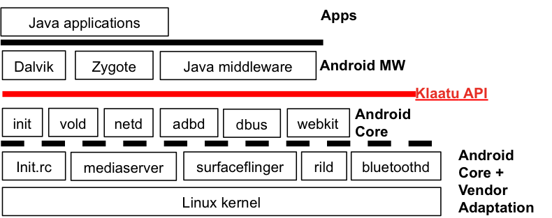

Klaatu
Here is a simple diagram of the components in the Android software stack:

The Android software stack has been put together with quite a clean design:
- Vendor adaptation: linux kernel and in selected user space libraries and processes
- Android "core": a C/C++ set of libraries and applications for startup, communications, media, graphics processing
- Android "middleware": provide a rich set of services for Dalvik applications
- Zygote system process: includes both shared system services for applications as well as window manager functionality
- Remove Applications, Middleware and Dalvik from the software build
- Add busybox and a few replacement servers
- Document the upper interface of the Android core pieces
- Experiment with several different application frameworks, including: * Qt/QML * Python/Kivy * HTML5 (probably both Mozilla and Webkit) * Game engines
Software build
User Interface Frameworks
Debug and Maintenance